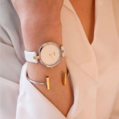
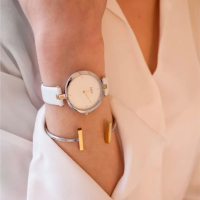
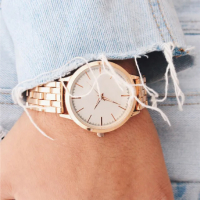
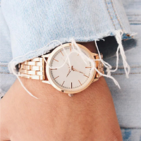

Цікаві факти про бібліотеки світу
Що є сховищем знань, як не бібліотека? У світі їх дуже, дуже багато, адже люди почали переносити масиви знань в електронні сховища порівняно недавно, а перші бібліотеки з'явилися на Землі тисячі років тому. І, ймовірно, свого значення вони ніколи не втратять, бо ніщо не зрівняється з особливою атмосферою книгосховища.У Єльському університеті, в Бейнеку, є бібліотека без єдиного вікна. Вони там і не потрібні, бо стіни будівлі виготовлені з напівпрозорого мармуру. Одного разу в публічну бібліотеку фінського міста Вантаа хтось підкинув книгу, взяту з неї близько 100 років тому. Встановити людину, яка її повернула, не вдалося. У Норвегії можна повернути книгу в будь-яку публічну бібліотеку, зовсім не обов'язково в ту, в якій ви її взяли. Найстаріша у світі бібліотека з-поміж тих, що діють, розташована в Єгипті, в монастирі Святої Катерини. Вона була побудована близько 1500 років тому.
Найдавнішу бібліотеку, коли-небудь знайдену археологами, було створено народом шумерів близько 4500 років тому. У ній зберігалося безліч глиняних табличок із записами, оскільки книги тоді ще не винайшли.У середньовічних бібліотеках книги через їхню цінність приковували масивними ланцюгами, щоб їх не можна було прихопитиіз собою. У сучасних бібліотеках зберігається близько 130 мільйонів різних книг. Мається на увазі 130 мільйонів творів (видань), а не примірників. Примірників на багато порядків більше.Заснована майже 700 років тому національна бібліотека Франції спочатку розташовувалася в Луврі, резиденції французьких королів, але відтоді вона багато разів переїжджала, не припиняючи при цьому роботу. У Нью-Йорку є безкоштовні вуличні бібліотеки, найменші у світі, розраховані всього на одного відвідувача. Вони схожі на жовті склянки, і в них зберігається близько 40 книг. Їх поставили для того, щоб городяни могли відпочити від шаленого ритму життя і відволіктися ненадовго. Найвища бібліотека у світі розташована в Шанхаї, в готелі "Маріотт", на висоті близько 230 метрів. Систему класифікації книг у бібліотеці винайшли в Стародавньому Китаї. Колись у бібліотеках усі книги ставилися корінцями всередину, а не назовні. Чому – ніхто не знає. Найдавнішим відомим бібліотекарем є грек, літературний критик на ім'я Зенодот, який служив в Олександрійській бібліотеці.
Перський візир Абдул Кассім Ісмаїл, який жив близько 1000 років тому, прославився тим, що завжди брав із собою особисту бібліотеку, куди б він не вирушав. Це дуже цікавий факт, враховуючи, що його бібліотека містила в собі близько 117 000 книг, і віз її караван із 400 верблюдів, навантажених книгами, розсортованими в алфавітному порядку. Найзнаменитішою є Олександрійська бібліотека, що знаходилася в Стародавньому Єгипті. У ній навчалися такі великі уми, як Аристотель та Евклід. На жаль, її було знищено. У ній зберігалося близько 200 000 сувоїв і 700 000 записів. Найбільшою бібліотекою у світі є американська Бібліотека Конгресу, в якій зберігається близько 155 мільйонів книг. Щорічно її відвідують близько 1,7 мільйона осіб.Найбільшою електронною бібліотекою у світі є Всесвітня цифрова бібліотека, що являє собою проект Бібліотеки Конгресу. На борту Міжнародної космічної станції є своя бібліотека. У ній зберігається близько сотні книг. Публічна бібліотека Канзасу зовні має вигляд гігантської книжкової полиці. В італійському місті Перуджа є бібліотека імені Сандро Пенни, будівля якої виглядає, як літаюча тарілка. У сінгапурській публічній бібліотеці Бішан зали для читання ретельно звукоізольовані, щоб відвідувачі не заважали один одному. У німецькому місті Магдебурзі функціонує незвичайна публічна бібліотека, побудована зі старих ящиків з-під пива.
На території США громадських бібліотек більше, ніж "Макдональдсів". Знаменитий бібліоклептоман Стів Блумберг мав потяг до крадіжки книг. Загалом за свою "кар'єру" він викрав понад 23 000 книжок із 268 бібліотек різних країн, завдавши збитків у 20 мільйонів доларів. У вищезгаданій давньоєгипетській Александрії всі кораблі, що входили в її порт, платили податок книжками. Книгу відправляли в бібліотеку, де її переписували і віддавали власнику копію, а оригінал забирали як податок.
Посилання
ПосиланняУ Нью-Йорку є безкоштовні вуличні бібліотеки, найменші у світі, розраховані всього на одного відвідувача. Вони схожі на жовті склянки, і в них зберігається близько 40 книг. Їх поставили для того, щоб городяни могли відпочити від шаленого ритму життя і відволіктися ненадовго. Найвища бібліотека у світі розташована в Шанхаї, в готелі "Маріотт", на висоті близько 230 метрів. Систему класифікації книг у бібліотеці винайшли в Стародавньому Китаї.
Найдавнішим відомим бібліотекарем є грек, літературний критик на ім'я Зенодот, який служив в Олександрійській бібліотеці. Найбільшою електронною бібліотекою у світі є Всесвітня цифрова бібліотека, що являє собою проект Бібліотеки Конгресу. На борту Міжнародної космічної станції є своя бібліотека. У ній зберігається близько сотні книг. Публічна бібліотека Канзасу зовні має вигляд гігантської книжкової полиці.
1
2
3
4
5
Follow Products And Discounts On Instagram

 


 

KROVATO це
Власне виробництво
Також у нас є своє виробництво, завдяки чому ми можемо виготовити меблі безпосередньо за Вашими побажаннями: нестандартний розмір, висота, виготовлення меблів за Вашим ескізом. Ліжка, тумби, комоди, шафи - все це ми можемо доопрацювати за Вашим бажанням.
Професіонали
Наші вироби виготовлені на професійному обладнанні з ясена, вільхи, бука, дуба, металу та ДСП. Фабрики із закритим циклом виробництва – контроль якості кожному етапі: від завезення дерева в цех до складання ліжка в клієнта.
Великий вибір
На нашому сайті Ви легко зможете підібрати собі спальню, вітальню або дитячу кімнату під ключ. Величезний вибір матраців, ліжок, а також тумбочок та комодів чекають на Вас.
Контроль якості
Наші досвідчені менеджери, з радістю допоможуть підібрати Вам меблі, які Вас радуватимуть довгі роки. Завдяки власній службі доставки та збирання, ми підтримуємо контроль якості від виробництва до клієнта.
Оформлення вітальні.Які м'які меблі краще вибрати ?

Вітальня – це основна кімната у кожному будинку. Саме вона служить для прийому гостей, проведення часу всією сім`єю та просто для відпочинку у приємній теплій атмосфері. Оформляючи свій будинок та вітальню зокрема, всі намагаються зробити її максимально зручною, комфортною та красивою. Основним та центральним елементом оформлення вітальні, як і будь-якої іншої кімнати, є м`які меблі.
Будь-які меблі для вітальні повинні бути не тільки стильними і красивими, але і функціональними. На таких меблів має бути зручно та приємно відпочивати та приймати гостей. Однак сьогодні існує величезна різноманітність найрізноманітніших м`яких меблів для вітальні, яка підходить для кімнат різних розмірів і форм. На чому варто зупинити свій вибір? Як краще оформити свою вітальню, щоб вам було комфортно, а гості хотіли приходити до вас знову та знову?
На сайті інтернет магазину Кровато представлено велику різноманітність м`яких меблів для вітальні, серед яких кожен зможе вибрати для себе найбільш вдалий варіант. У нас ви знайдете:
Прямі дивани. Такі дивани вважаються класикою. Вони підходять для віталень будь-яких форм та розмірів. Прямий диван виглядає стильно та лаконічно, на ньому зручно відпочивати, приймати гостей або навіть спати. Прямі дивани можуть стояти біля стіни, так і в центрі кімнати. Багато моделей прямих диванів легко розкладаються, перетворюючись на повноцінне спальне місце. Також більшість диванів мають великі та місткі ніші, які є додатковим місцем для зберігання;
Кутові дивани Кутові дивани вважаються найзручнішими та комфортнішими. Вони ідеально підійдуть для приємного проведення часу в колі сім`ї або друзів. Кутові дивани в основному використовуються для оформлення великих віталень, так як вони займають багато місця, і для кімнат з невеликою площею просто не підійдуть;
Тахти. Тахта - це одна з варіацій дивана, але стильніша і мінімалістична. Виглядають тахти дуже незвично і можуть підійти для будь-якого інтер`єру. Також тахти більше ніж звичайні дивани підходять для сну, оскільки в їх основі не пружинні блоки, а дерев`яні ламелі або ортопедичні матраци;
Крісла. Крісло – це особливий предмет інтер'єру. Сучасні дизайнери не часто використовують його, вважаючи застарілим, проте саме крісла створюють особливий затишок та комфорт у будь-якій кімнаті. Сьогодні існує величезна різноманітність класичних та сучасних моделей крісел, що дозволяє кожному відшукати ідеальне крісло для свого будинку;
Набір меблів. Комплект м'яких меблів – це відмінне рішення для тих, хто хоче меблювати свою вітальню не лише диваном, а й кріслами. Існують набори з одним або двома кріслами, із прямими або кутовими диванами. Основна перевага будь-якого готового меблевого гарнітура – це те, що предмети меблів у ньому ідеально поєднуються один з одним, і вам не потрібно буде витрачати свій час та сили на їхній підбір.